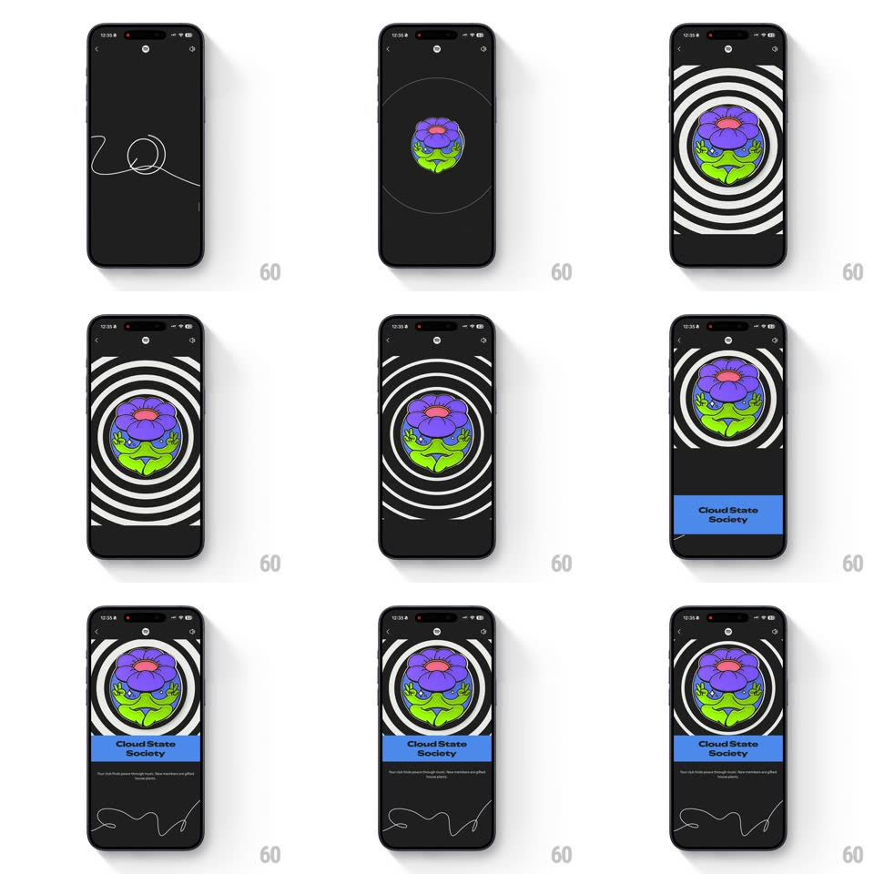

Media
Frame-by-frame

Rebuild this animation 1:1: Spotify Wrapped's club badge reveal - a hand-drawn line squiggle gives way to the badge blooming amid pulsing concentric rings, then a blue name card slides up to claim it.

Rebuild this animation 1:1: Spotify Wrapped's club badge reveal - a hand-drawn line squiggle gives way to the badge blooming amid pulsing concentric rings, then a blue name card slides up to claim it. ## Integration Integration: stack-agnostic spec - springs given as stiffness/damping, timed motions as duration + curve; map every value to your framework and animation library of choice. ## Scene A black Wrapped scene. A thin white hand-drawn squiggle drifts across, then the badge: a circular emblem (purple flower over green leaves) center screen, ringed by expanding concentric white circles. A blue card slides up from the bottom carrying the club name "Cloud State Society" and its one-line description, a fresh squiggle trailing beneath. ## Motion spec Pattern: badge reveal - line draw, springy scale, concentric ripples, sliding name card. - The squiggle draws itself on (stroke reveal, 800ms, a loose looping line that ends near center screen), then fades as it finishes. - The badge pops in at the squiggle's end point: scale 0 -> 1.15 -> 1 (spring ~360/12, visible bounce), rotating ~15deg to 0 as it lands. - Concentric rings pulse outward from the badge (scale 1 -> 2.4, opacity 0.8 -> 0, 1.4s each, staggered 350ms, 3-4 rings cycling) - a sonar bloom that keeps breathing while the badge holds. - The blue name card slides up from the bottom (translateY 100% -> 0, spring ~300/18, ~400ms), name first, description fading in 150ms later. - A second squiggle draws beneath the card (600ms) as the scene settles. ## Calibration - The rings are pure outline circles - no gradient, no glow; the flatness is the Wrapped print look. - The badge stays crisp and still while the rings move - never let the emblem itself pulse. ## Reduced motion Badge fades in with the card (300ms); no ripples. ## Don't miss - The club name sits on a solid blue band - the one saturated color block in the scene. - The squiggles bookend the reveal - opening flourish and closing signature.